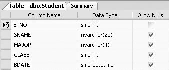
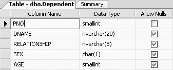
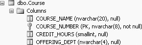

|
|
|
4.1. The JOINIn SQL Server , the join is accomplished using the ANSI JOIN SQL syntax (based on ANSI Standard SQL-92), which uses the JOIN keyword and an ON clause. The ANSI JOIN syntax requires the use of an ON clause for specifying how the tables are related. One ON clause is used for each pair of tables being joined. The general form of the ANSI JOIN SQL syntax is: SELECT columns FROM table1 JOIN table2 ON table1.column1=table2.column1 The basic idea of a join is as follows: Suppose we have the following two tables, Table 4-1 and Table 4-2.
The common column between the two tables (Table 4-1 and Table 4-2) is columnA. So the join would be performed on columnA. A SQL JOIN would give a table where columnA of Table1 = columnA of Table2. This would produce the new table, Table 4-3, the result of the join, as shown below:
There are several types of joins in SQL. To be precise, the previous model refers to an inner join, where the two tables being joined must share at least one common column. The columns of the two tables being joined by the JOIN command are matched using an ON clause. SQL Server will actually translate the example JOIN statement to an unambiguous INNER JOIN form, as you shall see. When inner-joining two tables, the JOIN returns rows from both tables only if there is a corresponding value in both tables as described by the ON clause column. In other words, the JOIN disregards any rows in which the specific join condition, specified in the ON clause, is not met. To illustrate the JOIN using our database (Student_course database), we present the following two examples. 4.1.1. Example 1To find the student names and dependent names of all the students who have dependents, we need to join the Student table with the Dependent table, because the data that we want to display is spread across these two tables. Before we can formulate the JOIN query, we have to examine both tables and find out what relationship exists between the two tables. Usually this relationship is where one table has a column as a primary key and the other table has a column as a foreign key. A primary key is a unique identifier for a row in a table. A foreign key is so called because the key it references is "foreign" to the table where it exists. Let us first look at the table descriptions of the Student and Dependent tables, shown in Figures 4-1 and 4-2, respectively.
Figure 4-1. Description of Student table
Figure 4-2. Description of Dependent tableIn examining these two tables, we note that student number (stno in the Student table) is the primary key of the Student table. stno is the unique identifier for each student. The Dependent table, which was not created with a primary key of its own, contains a reference to the Student table in that for each dependent, a parent number (pno) is recorded. pno in the Dependent table is a foreign keyit represents a primary key from the table it is referencing, Student. pno in the Dependent table is not unique, because a student can have more than one dependent; that is, one stno can be linked to more than one pno. From the table descriptions, we can see that the Student table (which has columns stno, sname, major, class, and bdate) can be joined with the Dependent table (which has columns pno, dname, relationship, sex, and age) by columns stno from the Student table and pno from the Dependent table. Following the ANSI JOIN syntax, we can join the two tables as follows: SELECT stno, sname, relationship, age FROM Student s JOIN Dependent d ON s.stno=d.pno In this construction, Student refers to the Student table and s is the table alias of the Student table. Likewise, Dependent refers to the Dependent table and d is the table alias of the Dependent table. The table alias simplifies writing queries or expressions using single-letter table aliases. We very strongly recommend using table aliases in all multi-table queries. This query requests the student number (stno) and student name (sname) from the Student table, and the relationship and age from the Dependent table when the student number in the Student table (stno) matches a parent number (pno) in the Dependent table.
When the previous query is typed and executed, you will get the following output showing the dependents of the students: stno sname relationship age ------ -------------------- ------------ ------ 2 Lineas Son 8 2 Lineas Daughter 9 2 Lineas Spouse 31 10 Richard Son 3 10 Richard Daughter 5 14 Lujack Son 1 14 Lujack 3 17 Elainie Daughter 4 17 Elainie Son 1 20 Donald Son NULL 20 Donald Son 6 34 Lynette Daughter 5 34 Lynette Daughter 1 62 Monica Husband 45 62 Monica Son 14 62 Monica Daughter 16 62 Monica Daughter 12 123 Holly Son 5 123 Holly Son 2 126 Jessica Son 6 126 Jessica Son 1 128 Brad Son 1 128 Brad Daughter NULL 128 Brad Daughter 2 128 Brad Wife 26 132 George Daughter 6 142 Jerry Daughter 2 143 Cramer Daughter 7 144 Fraiser Wife 22 145 Harrison Wife 22 146 Francis Wife 22 147 Smithly Wife 23 147 Smithly Son 4 147 Smithly Son 2 147 Smithly Son NULL 153 Genevieve Daughter 5 153 Genevieve Daughter 4 153 Genevieve Son 2 158 Thornton wife 22 (39 row(s) affected) 4.1.2. Example 2To find the course names and the prerequisites of all the courses that have prerequisites, we need to join the Prereq table with the Course table. Course names are in the Course table and the Prereq (prerequisites) table contains the relationship of each course to its prerequisite course. The descriptions of the Prereq table and Course tables are shown in Figures 4-3 and 4-4, respectively.
Figure 4-3. Description of Prereq table
Figure 4-4. Description of Course tableFrom these descriptions, we first note that the Course table has course_number as its primary keythe unique identifier for each course. The Prereq table also contains a course number, but the course number in the Prereq table is not uniquethere are often several prerequisites for any given course. The course number in the Prereq table is a foreign key referencing the primary key of the Course table. The Prereq table (which has columns course_number and prereq) can be joined with the Course table (which has columns course_name, course_number, credit_hours, and offering_dept) by the relationship column in both tables, course_number, as follows: SELECT * FROM Course c JOIN Prereq p ON c.course_number=p.course_number The same query could be written without the table alias (using a table qualifier) as follows: SELECT * FROM Course JOIN Prereq ON Course.course_number=Prereq.course_number However, the use of the table alias is so common that the table-alias form should be used. Also, aliases let you select columns that have the same names from the tables. This query will display those rows (12 rows) that have course_number in the Course table equal to course_number in the Prereq table, as follows: COURSE_NAME COURSE_NUMBER CREDIT_HOURS OFFERING_DEPT COURSE_NUMBER PREREQ -------------------- ------------- ------------ ------------- ------------- -------- MANAGERIAL FINANCE ACCT3333 3 ACCT ACCT3333 ACCT2220 ORGANIC CHEMISTRY CHEM3001 3 CHEM CHEM3001 CHEM2001 DATA STRUCTURES COSC3320 4 COSC COSC3320 COSC1310 DATABASE COSC3380 3 COSC COSC3380 COSC3320 DATABASE COSC3380 3 COSC COSC3380 MATH2410 ADA - INTRODUCTION COSC5234 4 COSC COSC5234 COSC3320 ENGLISH COMP II ENGL1011 3 ENGL ENGL1011 ENGL1010 FUND. TECH. WRITING ENGL3401 3 ENGL ENGL3401 ENGL1011 WRITING FOR NON MAJO ENGL3520 2 ENGL ENGL3520 ENGL1011 MATH ANALYSIS MATH5501 3 MATH MATH5501 MATH2333 AMERICAN GOVERNMENT POLY2103 2 POLY POLY2103 POLY1201 POLITICS OF CUBA POLY5501 4 POLY POLY5501 POLY4103 (12 row(s) affected) Rows from the Course table without a matching row in the Prereq table are not included from the JOIN result set. Courses that do not have prerequisites are not in the result set.
The inner join uses equality in the ON clause (the join condition). When an equal sign is used as a join condition, the join is called an equi-join. The use of equi-joins is so common that many people use the phrase "join" synonymously with "equi-join"; when the term "join" is used without qualification, "equi-join" is inferred. When dealing with table combinations, specifically joins, it is a good idea to estimate the number of rows one might expect in the result set. To find out how many rows will actually occur in the result set, the COUNT function is used. For example: SELECT COUNT(*) FROM Course c JOIN Prereq p ON c.course_number=p.course_number will tell us that there are 12 rows in the result set. In any equi join, let us suppose that the two tables to be joined have X number of rows and Y number of rows respectively. How many rows does one expect in the join? A good guideline is in the order of MAX(X,Y). In our case, we have 12 rows in the Prereq table and 32 rows in the Course table. MAX(12,32) = 32, but we actually got 12 rows. MAX(X,Y) is just a guideline. The actual and expected number of rows need not match exactly. It is possible that some Course-Prereq combinations might be repeated. 4.1.3. The INNER JOINIn SQL Server, the keyword combination INNER JOIN behaves just like the JOIN discussed in the previous section. The general syntax for the INNER JOIN is: SELECT columns FROM table1 INNER JOIN table2 ON table1.column1=table2.column1 Using the INNER JOIN, the JOIN query presented in the previous section also could be written as: SELECT * FROM Course INNER JOIN Prereq ON Course.course_number=Prereq.course_number And, this query too, would produce the same results as given in the previous section.
4.1.4. Using a WHERE Clause Instead of a JOINAnother way of joining tables in SQL Server is to use a WHERE clause instead of using the JOIN or INNER JOIN command. According to the SQL-92 standard, the inner join can be specified either with the JOIN/INNER JOIN construction or with a WHERE clause. To perform a join with a WHERE clause, the tables to be joined are listed in the FROM clause of a SELECT statement, and the "join condition" between the tables to be joined is specified in the WHERE clause. The JOIN from the preceding section could be written with a WHERE clause as follows: SELECT * FROM Course c, Prereq p WHERE c.course_number= p.course_number This command will display the same 12 rows as was previously shown (when the JOIN was used). You will soon see one of the reasons it is better not to use WHERE. 4.1.5. Associative Property of the JOINWhen two tables are being joined, it does not matter whether TableA is joined with TableB, or TableB is joined with TableA. For example, the following two queries would essentially give the same result set (output): SELECT * FROM Course c JOIN Prereq p ON c.course_number=p.course_number and: SELECT * FROM Prereq p JOIN Course c ON p.course_number=c.course_number The only difference in the two result sets would be the order of the columns . But the result set column order can be controlled by listing out the columns in the order that you want them after the SELECT instead of using the SELECT * syntax. 4.1.6. Column Types in JoinsJoins have to be performed on "compatible" columns; that is, a character column may be joined to another character column, a numeric column may be joined to another numeric column, and so forth. So, for example, a CHAR column can be joined to a VARCHAR column (both being character columns), or an INT column can be joined to a REAL column (both being numeric columns). Having made the point that compatible columns are required, and keeping in mind that SQL is not logical, it is up to the programmer to match semantics. In reality, why would you join two tables unless a relationship existed? If you ask SQL to join a job_title column with a last_name column, it will try to do so even though it makes no sense! Some columns types--for example, IMAGE--cannot be joined, as these columns will generally not contain "like" columns. Joins cannot be operated on binary data types. 4.1.7. Performance Hint for Efficient JoinsJoin on the narrowest columns possible. The narrower the column, the less storage space is used by SQL Server, and SQL Server can read and write the data faster. |
|
|
|